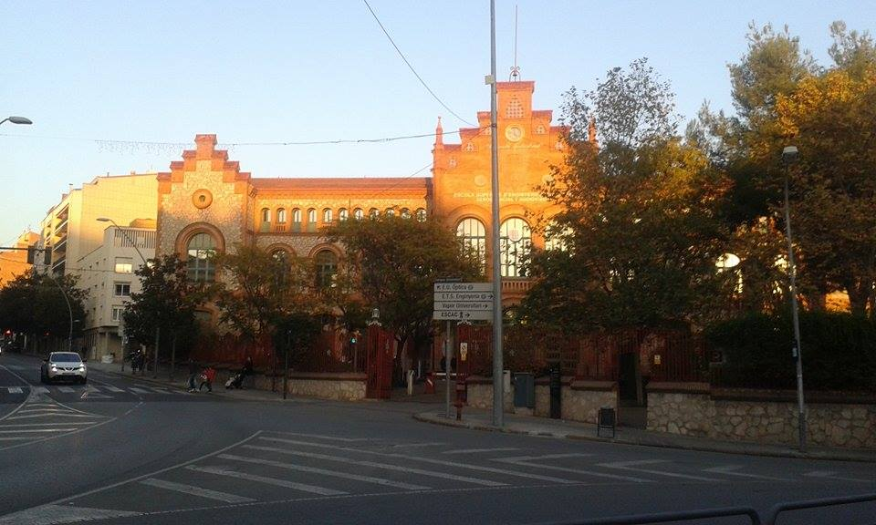
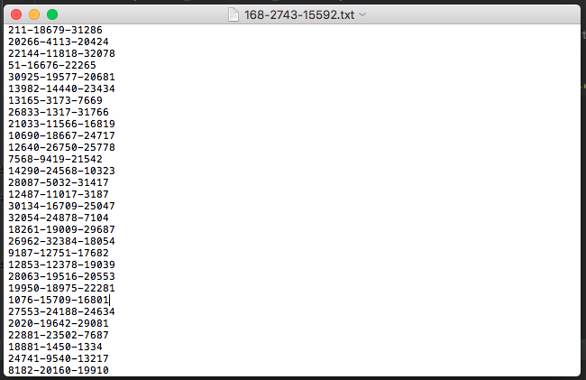
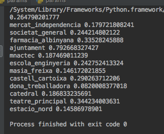

BauID
Sessió 3
La sessió 3 consistia en extreure els punts d'interès d'una imatge. També s'havien de fer les fotografies dels edificis que ens van tocar, en el nostre cas l'Escola d'Enginyeria i el monument a la Dona Treballadora. A més a més, haviem de crear la nostra pàgina web on explicariem el nostre projecte.
A part d'això haviem de crear-nos un compte al GitHub ifer el repositori del projecte.

Sessió 4
La sessió 4 haviem de complementar el builDatabase i altre Scripts per tal de poder fer que el nostre programa fes un rànquing de les fotografies i ens donès la pressició de cda edifici i la MAP. En el nostre cas, no vam tenor molt d'èxit en aquesta part, llavors no vam poder obtindre aquests resultats.
Sessió 5
La sessió 5 consistia en tornar a fer les tasques de la sessió anterior ja que no ens havíem ensortit. Aquest cop vam aconseguir fer un rànking, però no ens sortia ordenat i tampoc avaluava aquest rànking donant la pressició. Per tant, un altre cop, no vam poder tenir cap resultat.
Sessió 6/ Presentació
Per aquesta última sessió hem de presentar el nostre projecte, és a dir, que necessitem que funcioni tot el programa.
Després de moltes hores de treball, consultes i búsquedes, per fi hem aconsseguit que funcioni i ens doni resultats i a més força bons!
Un cop el programa estava funcionant, ens hem possat a intentar millorar-lo perquè sigui més eficient. Una de les idees que em fet ha sigut cambiar la mida dels descriptors i hem vist que la millor es la de 1024, ja que a 2048 comença a donar pitjor rendiment. Com a idea principal, hem volgut fer diferents particions per veure que passa si variem els conjunts de validació i entrenament. Hem dividit el conjunt en 6: 0.125, 0.25, 0.5, 0.625, 0.75 i 0.875. En aquest link podeu veure tots els resultat amb gràfiques. Resultats
 